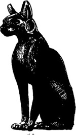

15
Listen to Part 1:

Kết cục
Sáng hôm sau, Salahadin cùng Leila và Fuad đến Bảo tàng Cairo. Họ mang theo Mèo đen. Họ gặp một người bạn tên Faisal làm việc tại bảo tàng.
Salahadin đưa Mèo đen cho Faisal và kể cho anh nghe câu chuyện.
Faisal nói: "Nó trông cũ lắm, và có lẽ rất giá trị. Nhưng tôi không biết gì về vàng và kim cương cả. Tôi phải xem xét nó thật cẩn thận đây."
Salahadin, Leila và Fuad đi uống cà phê. Khoảng hai giờ sau, họ quay lại bảo tàng.
Fuad hỏi: "Thế câu trả lời là gì?"
Faisal đáp: "Nó rất cũ, nhưng không phải làm bằng vàng và cũng không có kim cương. Đôi mắt và chiếc vòng cổ làm bằng đá. Còn con mèo làm bằng một loại gỗ nặng."
Leila nói: "Vậy là nó không có giá trị rồi. Bảy người đã chết chỉ vì một miếng gỗ."

"Không, cô nhầm rồi," Faisal nói. "Nó rất, rất có giá trị. Nó đã hơn hai nghìn năm tuổi. Vàng và kim cương không quan trọng."
Listen to Part 2:
Salahadin nói: "Có lẽ đã từng có một con mèo bằng vàng thật. Có lẽ những tên trộm mộ đã đánh cắp con mèo thật cách đây hàng nghìn năm. Sau đó, chúng đặt con mèo bằng gỗ này vào ngôi mộ."
Fuad nói: "Chúng ta sẽ không bao giờ biết được. Nhưng chúng ta may mắn khi có được con này."
Faisal nói: "Đúng vậy, chúng ta may mắn lắm. Các bạn có thể để nó trong bảo tàng của chúng tôi được không?"
Salahadin trả lời: "Tất nhiên là được. Đây là nơi phù hợp nhất cho nó."
Faisal nói: "Tháng 11 hãy quay lại nhé. Các bạn sẽ thấy Mèo đen ở đúng vị trí của nó."
Leila nói: "Chúng tôi cũng sẽ quay lại. Fuad đã làm việc quá sức rồi. Anh ấy cần một kỳ nghỉ thực sự. Chúng tôi sẽ quay lại Cairo trong hai tuần vào tháng 11."
Faisal nói: "Đó là một ý kiến hay. Hẹn gặp lại tất cả các bạn nhé."
Sáu tháng sau, Salahadin đang ngồi trong văn phòng của mình. Mùa hè đã kết thúc và thời tiết đang trở nên mát mẻ. Điện thoại reo.
Faisal hỏi: "Ông vẫn nhớ lời hứa của mình chứ?"
Listen to Part 3:
"Lời hứa gì cơ?"
Faisal tiếp tục: "Đến bảo tàng ấy. Phòng mới sẽ được mở cửa vào sáng mai lúc mười giờ."
Salahadin nói: "Ồ, tất nhiên rồi. Tôi sẽ đến đó."
Sáng hôm sau, có rất đông người ở bảo tàng. Faisal gặp Salahadin và đưa anh đến căn phòng mới. Ngoài cửa có một tấm biển lớn.
Các nhà khảo cổ đã tìm thấy lăng mộ của Ankuten. Bản đồ của Pearson đã giúp họ. Họ đã mang nhiều thứ từ lăng mộ về Cairo. Tất cả đều ở trong căn phòng này.
Ahmed đang đứng giữa phòng. Anh ta đang nói chuyện với Fuad và Leila. Tài xế taxi đã đưa Borkman đến ga tàu Cairo cũng có mặt ở đó. Salahadin tiến lại để chào.
Ahmed hỏi: "Ông thấy thứ gì đằng sau tôi không?"
Ở đó, giữa phòng là một tủ kính lớn. Bên trong là Mèo đen. Dưới nó có một tấm biển ghi:
Mèo đen của Ankuten do Salahadin El Nur tặng
Listen to Part 4:
Ahmed đang đứng giữa phòng. Salahadin tiến lại để chào.
Mục lục
- Bìa
- Trang tiêu đề
- Trang bản quyền
- Nội dung
- Lời giới thiệu
- 1 Salahadin lo lắng
- 2 Chiếc hộp mất tích
- 3 Tài xế taxi
- 4 Thuyền đến Beirut
- 5 Con mèo đen
- 6 Ở Beirut
- 7 Đường đến Ba’albek
- 8 Câu chuyện của Borkman
- 9 Beirut đến Athens
- 10 Salahadin tìm thấy Peterson
- 11 Salahadin tìm thấy con mèo đen
- 12 Cái chết trên chuyến tàu The Syria
- 13 Không làm phiền
- 14 Trở về Cairo
- 15 Cái kết
- Ghi nhớ để hiểu được bài